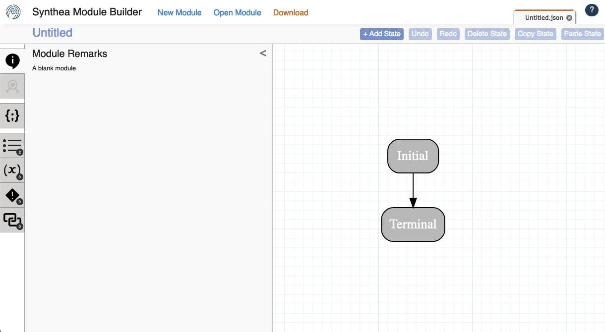
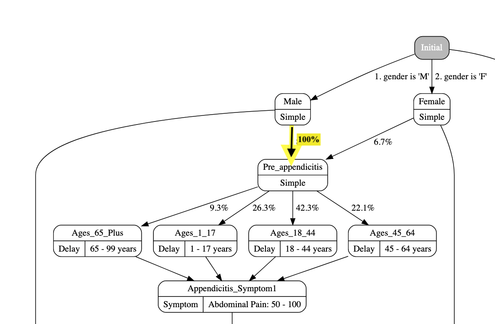

Customizing Synthea Data
- Understand the options that are available for customizing Synthea to fit a use case.
While data generated by Synthea may be valuable for a number of different use cases, out of the box it may not address everyone’s. If your needs are completely different from what Synthea offers then it might not be the best option, but if the data is close and just needs a little bit more, there are multiple approaches to customizing it. The best approach will depend on the specifics of your use case.
This page describes in detail a few of the options available for customizing output from Synthea, and is meant for people who actually intend to customize data. No Java programming experience required, but you should be familiar with the basics of Synthea so make sure to read Synthea Overview and Running Synthea first, and you should be comfortable modifying text-based files and using the command line.
1 Modules
By default, Synthea includes dozens of modules representing the progression and treatment of common diseases and determinants of health. Synthea modules are either top-level modules, also referred to as core modules, which will run for every patient in the simulation starting at birth, or submodules, which are only run when specifically invoked from another module via a specific state. The set of modules is not fixed; users can create, edit, or delete modules as needed.
There are three fundamental concepts involved in the modules:
- States, which can be broken down further into:
- Clinical States, which represent events related to the patient’s health care. A clinical state will nearly always result in one or more entries being added to the patient’s record.
- Control States, which drive the progression and flow through the module. For example, delays and guards will pause the module for some amount of time.
- Transitions, which represent the connections between states. States may transition directly to another state, or they may branch to multiple states, where the path the patient takes may vary based on different logical conditions or weighted random chance.
- Logical Conditions, which are tests against aspects of the patient, their health record, or their path through the modules, which can be “true” or “false”.
The Synthea wiki details all of the available options for States, Transitions, and Logical Conditions.
During the generation process, Synthea will process each module individually, one state at a time. States will process and transition to the next state immediately, with the following exceptions:
- Terminal states represent the end of the module.
- Delay states, where the module will continue only after the specified amount of time has passed.
- Guard states, where the module will continue only after the given logical condition becomes true.
- Encounter states of type “wellness”, where the module will determine when to enter the encounter using a schedule based on the patient’s age and current symptoms.
1.1 Creating and Editing Modules
For the most detailed and up-to-date guidance on creating and editing modules, see the Generic Module Framework section on the Synthea wiki.
While the module JSONs can technically be written by hand, we strongly recommend using the Module Builder to edit modules graphically.
Before starting with the module builder, we recommend watching a short video introduction to the Module Builder, and reading through a module builder tutorial on the Synthea Wiki.
1.2 Creating a New Module
In the Module Builder, click the “New Module” button in the upper left. This will open a new tab in the builder with the simplest possible module: an Initial state that transitions directly to a Terminal state.

Either state can be clicked on to select it and change the name, type, transition, or other properties via the sidebar. As you familiarize yourself with the module builder, try clicking on the various fields to see what options are available. No changes here can directly affect Synthea, so don’t worry, it is completely impossible to break anything (though it is possible to lose work, so we recommend downloading work-in-progress modules to a file often). If you make a mistake, nearly any change can be undone with the Undo button.
To add new states to the module, click the “+ Add State” button in the upper right of the editor. Note this will do slightly different things based on what is currently selected in the module graph:
- If nothing is selected, the new state will be added off to the side. You must manually connect other states to it, and it to other states by editing the transitions.
- If a state is selected, the new state will be added “at the end” of the selected state. The selected state will now transition directly to the new state, and the new state will have the original transition from the selected state.
- If a transition arrow is selected, the new state will be added “inside” the transition. The transition will now point to the new state, and the new state will transition directly to the original target of the transition.
Again, the new state can be clicked on to select it and change the name, type, transition, or other properties via the sidebar. Different options and fields will appear depending on the state and transition type selected.
1.3 Editing an Existing Module
To load an existing module for editing, first click the “Open Module” button at the top of the Module Builder. From the load module screen there are a few options:
- The “Core Modules” and “Submodules” are a good first step for exploring the various modules available.
- The “GitHub modules” tab loads modules directly from various branches on the core Synthea repository on GitHub.
- You can also drag & drop a module JSON file onto the modal, click to open a file browser to select a JSON file, or paste the JSON content of the file into the “Paste JSON” tab.
- The “Local Storage” and “My Modules” tabs will be empty initially, but as you use the module builder these may be populated with modules you edit.
Once a module is loaded, you can add, edit, or remove states just as you would if you were creating a new module. Note that no matter how you load a module into the module builder, you are editing a copy. As before, this means you should feel free to experiment without worrying about breaking anything, but do download your module regularly to make sure you don’t lose work if something goes wrong.
1.4 Loading Modules Into Synthea
Top-level modules in Synthea are stored in the src/main/resources/modules folder under the base synthea directory. Submodules are stored in further subfolders under this. If your new or modified module is a top-level module and is expected to run for all patients starting at birth, make sure it is in the src/main/resources/modules folder. If you are modifying an existing module, make sure the name is exactly the same (in terms of capitalization, spaces vs underscores, etc) and you completely replace the file in its original location.
Once your module has been loaded, no special command line flags are necessary. Simply re-run Synthea with your desired configuration and it should pick up the new module immediately.
- I created a module with just a Condition/Observation/Procedure but it doesn’t show up in records. Why not?
- Most likely the issue is that the state is being processed and the record entry is added immediately at birth, but then filtered out at export time. By default Synthea only keeps the last 10 years of history when a patient is exported. This setting is driven by the configuration item
exporter.years_of_history. This setting can be changed either on the command line with flag--exporter.years_of_history=Nor if using the developer setup, in the configuration file atsrc/main/resources/synthea.properties. We recommend setting this option to0, meaning “keep all history”, while creating and debugging a new module.
- Most likely the issue is that the state is being processed and the record entry is added immediately at birth, but then filtered out at export time. By default Synthea only keeps the last 10 years of history when a patient is exported. This setting is driven by the configuration item
- Why isn’t Synthea processing my module?
- First, make sure you are not encountering the same issue as the previous question, where your module is being processed but the record entries are filtered out. Next, make sure the module is actually being loaded - watch the list of modules being loaded at startup and confirm your new module is in that list. It may be useful to temporarily remove other modules to speed up the process.
- How can I run only my module and none of the default modules?
- Generally this is not recommended as there are dependencies between modules which may be non-obvious and removing some can result in unexpected behavior, errors, or crashes. Also note that some of the modules are included as part of the core engine and cannot be easily disabled. However if for debugging purposes you would like to disable the default modules, the best approach is to remove the files from
src/main/resources/modules(or move them somewhere else).
- Generally this is not recommended as there are dependencies between modules which may be non-obvious and removing some can result in unexpected behavior, errors, or crashes. Also note that some of the modules are included as part of the core engine and cannot be easily disabled. However if for debugging purposes you would like to disable the default modules, the best approach is to remove the files from
If your module still does not work as expected, please feel free to post a discussion item on the Synthea GitHub to request assistance. Make sure to include as much information as possible, including the module and any errors you are seeing.
2 Keep Modules
It is common in many use cases that only records with specific attributes are relevant, for example, maybe you only want records containing a certain diagnosed Condition. There are a few approaches that can be taken here:
- Post-process the data with another tool such as a Python script, to examine a set of exported records and filter out those that do not meet your defined criteria. (Note that if the condition of interest is rare, it may take a lot of time and resources to generate sufficient records)
- Modify the module for your condition of interest, to ensure all patients get the condition. (Note this may be trivial in some instances, but in others the relationships between modules can be complex, or the item of interest may be set within the Java engine.)
- Use a Keep Module. A Keep Module is a module similar to a disease module, that defines criteria for whether a record should be kept or discarded. The biggest advantage of a Keep Module is that all patients exported will have the desired criteria, and it will generate the requested number of patients. (That is, assuming the criteria are possible to meet.)
It is critical that the Keep Module represent logic that it is possible for a Synthea record to actually meet. For instance, the Diabetes module will never onset diabetes in a patient earlier than age 18, so a Keep Module for “keep patients under 18 with Diabetes” will not work.
Synthea does not have the ability to recognize when a Keep Module is impossible to satisfy. In these situations, to avoid running forever, the simulation will stop after a certain number of failed attempts to generate a record. If the situation is known to be possible but exceptionally rare, it is possible to increase the number of failed attempts before the simulation stops, with the config setting: generate.max_attempts_to_keep_patient = 1000
The basic idea of a Keep Module is that it is a regular Synthea module, built with the Module Builder, with a specially named Terminal state “Keep”. The module should use conditional transitions with logic such as “Active Condition” to determine whether to send patients to the Keep state or not. Patients that end the module in the Keep state will be exported, patients that end the module in any other state will be discarded and Synthea will restart a new patient with the same demographics but a different seed.

Construct a Keep Module using the Module Builder as usual (see instruction above in Creating and Editing Modules ), but do not save the .json file to the src/main/resources/modules folder. The easiest place to store it is in the base synthea folder.
Finally to actually run Synthea with the Keep Module, use the -k flag with the path to the file, for example:
run_synthea -k must_have_diabetes.jsonNow patients exported to any output format will only be patients matching the defined criteria from the Keep Module.
Note that only one Keep Module may be used at a time, however the logic within it can be as complex as you need.
If you only need patients with some active clinical criteria, such as Conditions or Medications, the Synthea Toolkit contains a minimal editor for creating this type of simple Keep Module quickly. For anything more complex, use the full Module Builder instead.
More information on Keep Modules is available on the Synthea wiki.
3 Modifying Demographics
By default, Synthea is configured to run with the demographics and health care providers of the United States, but may be configured to run with other demographics such as other countries as well. A set of demographics files and other geographical information is available for many countries at the synthea-international repository.
Beyond just other countries, the same approach can be use to create demographics files representing any population of interest. For research purposes, the most common changes are likely to be to the demographics of the desired population.
For instance, a research effort may want patients with a particular age and racial distribution. One approach to generate a population in Synthea with a specific demographic mix is to identify a city or state with the desired characteristics and generate a population in that location. Alternatively, if there is no such city or state, one could create or modify the demographics file so that it contains a line for a location with the desired characteristics. The default demographics file is available at ./src/main/resources/geography/demographics.csv - this file may be modified directly, or you may point Synthea at an alternative demographics file with the configuration property generate.demographics.default_file. Details on the demographics file format are available on the Synthea wiki.
Other types of information which can be modified or replaced to meet various needs are zip codes, time zones, providers, names, and costs.
Full details for customizing Synthea to generate other areas are available on the Synthea wiki.
4 Module Overrides
Module Overrides allow you to set specific values in a module, such as transition probabilities, without having to edit and replace the entire module. This makes it suitable for use with the Basic setup of Synthea.
Module overrides are defined using a Java properties file, where each key is the path to a specific field within a module, and the value is the new value to set for that field.
(module file path)\:\:(json path to value) = (new value)For instance, to change the prevalence of Appendicitis among males from the default 8.6% to 100% (imagine an example use case of “a population of all patients who have had an appendectomy”), you could use an override file containing the following line:
appendicitis.json\:\:$['states']['Male']['distributed_transition'][0]['distribution'] = 1.0This sequence of field names and indices uniquely identifies the field in the module JSON, and corresponds to setting the highlighted transition on the Appendicitis module to 100%: 
An overrides file may be saved anywhere, but for ease of use we recommend placing it directly in the base synthea folder or a subfolder, with the extension .properties.
Assuming the file overrides.properties is in the subfolder output, run Synthea as follows:
run_synthea --module_override=./output/overrides.propertiesIf using the Developer setup of Synthea, you can generate a template of a module override file with the “overrides” gradle task, for instance:
./gradlew overrides -PincludeModules=appendicitis.jsonNote: if running on Windows, use .\gradlew.bat instead of ./gradlew. gradlew here is a reference to the Gradle build tool which Synthea uses.
This creates an overrides file at ./output/overrides.properties containing the following:
appendicitis.json\:\:$['states']['Male']['distributed_transition'][0]['distribution'] = 0.086
appendicitis.json\:\:$['states']['Male']['distributed_transition'][1]['distribution'] = 0.914
appendicitis.json\:\:$['states']['Female']['distributed_transition'][0]['distribution'] = 0.067
appendicitis.json\:\:$['states']['Female']['distributed_transition'][1]['distribution'] = 0.933
appendicitis.json\:\:$['states']['Pre_appendicitis']['distributed_transition'][0]['distribution'] = 0.263
appendicitis.json\:\:$['states']['Pre_appendicitis']['distributed_transition'][1]['distribution'] = 0.423
appendicitis.json\:\:$['states']['Pre_appendicitis']['distributed_transition'][2]['distribution'] = 0.221
appendicitis.json\:\:$['states']['Pre_appendicitis']['distributed_transition'][3]['distribution'] = 0.093
appendicitis.json\:\:$['states']['Appendicitis']['distributed_transition'][0]['distribution'] = 0.7
appendicitis.json\:\:$['states']['Appendicitis']['distributed_transition'][1]['distribution'] = 0.3Any lines may be modified, or freely removed if the field value is not meant to change.
More detail on creating and using overrides files is available on the Synthea wiki.
5 Flexporter
The Flexible Exporter, aka “Flexporter” is an experimental feature that allows for arbitrary customizations in Synthea.
The Flexporter works using a YAML-based mapping file to define transformations that are applied to each patient record. Transformations generally contain a location, represented in FHIRPath, and a value to put at that location.
As with other customization features built into Synthea, the Flexporter is intended to tweak Synthea data, not radically transform it. Common situations where the Flexporter will be most valuable are situations where specific fields or resource types are needed but not exported. (For instance, imagine a use case that requires an Appointment resource prior to every Encounter. Synthea out of the box supports Encounter resources but not Appointment.) The Flexporter is intended to support a number of different use cases, but since it is impossible to predict every possible use case in advance, there are things that are outside the capability of the Flexporter.
As of June 2023, the Flexporter supports the following types of actions:
apply_profiles: Adds a given profile URI to themeta.profilefield on resources matching the given FHIRPathset_values: Set values on fields on resources that already exist within theBundlecreate_resource: Create new resources with specific values and add them to theBundle.keep_resources: Keep only resources matching certain FHIRPath. Other resources will be filtered outdelete_resources: Delete resources matching certain FHIRPath.execute_script: Execute arbitrary JavaScript against either the entireBundleor against individual resources of specific types. Note that the provided JavaScript may be arbitrarily complex, but loading libraries such as from npm is not supported.
Sample Flexporter Mapping File:
---
# name is just a friendly name for this mapping
name: Random Testing
# applicability determines whether this mapping applies to a given patient record
applicability: true
actions:
- name: Set Immunization.recorded = Immunization.occurrenceDateTime
set_values:
- applicability: Immunization
fields:
- location: Immunization.recorded
value: $getField([Immunization.occurrence])
- name: Create ServiceRequest for every Procedure
create_resource:
- resourceType: ServiceRequest
based_on:
resource: Procedure
fields:
- location: ServiceRequest.intent
value: plan
- location: ServiceRequest.encounter.reference
value: $getField([Procedure.encounter.reference])
- location: ServiceRequest.subject.reference
value: $findRef([Patient])
- location: ServiceRequest.code
value: $getField([Procedure.code])
writeback:
- location: Procedure.basedOn.reference
value: $setRef([ServiceRequest])This example mapping does the following:
- For every instance of
Immunization:
- Copy the value from
Immunization.occurrence[x](note as of April 2023 in Synthea this will always be adateTime) into the fieldImmunization.recorded
- For every instance of
Procedure:
- Create a new instance of
ServiceRequestand add it to theBundle. - Set the following values on the created
ServiceRequest:- Set
ServiceRequest.intentto the fixed value “plan” - Copy the value from the source
Procedure.encounter.referenceinto the fieldServiceRequest.encounter.reference - Find the first resource matching
Patientin the Bundle, create a reference to it, and set that on the fieldServiceRequest.subject.reference - Copy the value from the source
Procedure.codeinto the fieldServiceRequest.code
- Set
- Set the following values on the source
Procedure:- Create a reference to the created
ServiceRequestand set that on the fieldProcedure.basedOn.reference
- Create a reference to the created
Because the Flexporter is still experimental, to use it you must be working off the flexporter branch of the Synthea repository.
To run Synthea with Flexporter mappings enabled, use the -fm flag to specify a path to a mapping file. Multiple Flexporter mappings may be used at the same time, in which case they will be applied in the order listed in the command, for example:
run_synthea -fm ./src/test/resources/flexporter/qicore_common.yaml -fm additional_fields.yaml`Full detail on the mapping file specification and using the Flexporter is available on the Synthea wiki
6 Other Tools
Finally, if all else fails, other languages such as Python, JavaScript, or R can allow you to write your own scripts and tools to filter and modify the data created by Synthea as you see fit. The ecosystem is too broad to get into detail here, but some libraries of note that may be helpful are:
- JavaScript
- Python
- R